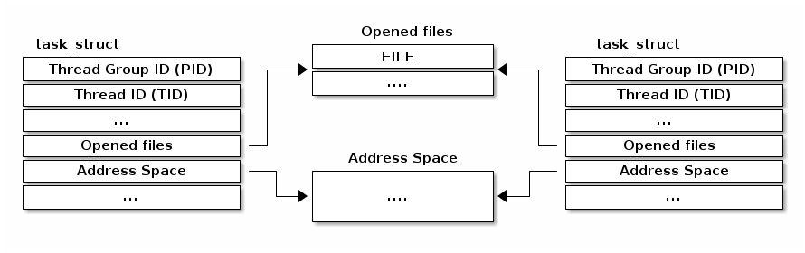

进程和线程
- 进程和线程
- 上下文切换
- 阻塞和唤醒
- 进程上下文
|
|
所有这些信息都被组织在进程控制块（PCB）中。在 Linux 中，PCB 对应的结构体是 struct task_struct。
+-------------------------------------------------------------------+
| dr-x------ 2 tavi tavi 0 2021 03 14 12:34 . |
| dr-xr-xr-x 6 tavi tavi 0 2021 03 14 12:34 .. |
| lrwx------ 1 tavi tavi 64 2021 03 14 12:34 0 -> /dev/pts/4 |
+--->| lrwx------ 1 tavi tavi 64 2021 03 14 12:34 1 -> /dev/pts/4 |
| | lrwx------ 1 tavi tavi 64 2021 03 14 12:34 2 -> /dev/pts/4 |
| | lr-x------ 1 tavi tavi 64 2021 03 14 12:34 3 -> /proc/18312/fd |
| +-------------------------------------------------------------------+
| +----------------------------------------------------------------+
| | 08048000-0804c000 r-xp 00000000 08:02 16875609 /bin/cat |
$ ls -1 /proc/self/ | 0804c000-0804d000 rw-p 00003000 08:02 16875609 /bin/cat |
cmdline | | 0804d000-0806e000 rw-p 0804d000 00:00 0 [heap] |
cwd | | ... |
environ | +----------->| b7f46000-b7f49000 rw-p b7f46000 00:00 0 |
exe | | | b7f59000-b7f5b000 rw-p b7f59000 00:00 0 |
fd --------+ | | b7f5b000-b7f77000 r-xp 00000000 08:02 11601524 /lib/ld-2.7.so |
fdinfo | | b7f77000-b7f79000 rw-p 0001b000 08:02 11601524 /lib/ld-2.7.so |
maps -----------+ | bfa05000-bfa1a000 rw-p bffeb000 00:00 0 [stack] |
mem | ffffe000-fffff000 r-xp 00000000 00:00 0 [vdso] |
root +----------------------------------------------------------------+
stat +----------------------------+
statm | Name: cat |
status ------+ | State: R (running) |
task | | Tgid: 18205 |
wchan +------>| Pid: 18205 |
| PPid: 18133 |
| Uid: 1000 1000 1000 1000 |
| Gid: 1000 1000 1000 1000 |
+----------------------------+
$ pahole -C task_struct vmlinux
struct task_struct {
struct thread_info thread_info; /* 0 8 */
volatile long int state; /* 8 4 */
void * stack; /* 12 4 */
...
/* --- cacheline 45 boundary (2880 bytes) --- */
struct thread_struct thread __attribute__((__aligned__(64))); /* 2880 4288 */
/* size: 7168, cachelines: 112, members: 155 */
/* sum members: 7148, holes: 2, sum holes: 12 */
/* sum bitfield members: 7 bits, bit holes: 2, sum bit holes: 57 bits */
/* paddings: 1, sum paddings: 2 */
/* forced alignments: 6, forced holes: 2, sum forced holes: 12 */
} __attribute__((__aligned__(64)));
使用调试器来检查名为 syslogd 的进程。


struct nsproxy 具有多个命名空间，每个命名空间可以在进程组之间选择性地共享init_net）。默认情况下，新进程之间共享这些命名空间（例如：可用网络接口的列表）访问当前进程是一个频繁的操作：
struct task_struct 的 file 字段struct task_struct 的 mm 字段current 宏可用于访问当前进程的 struct task_struct

/* 如何用 C 语言获取当前堆栈指针 */
register unsigned long current_stack_pointer asm("esp") __attribute_used__;
/* 如何用 C 语言获取线程信息结构体 */
static inline struct thread_info *current_thread_info(void)
{
return (struct thread_info *)(current_stack_pointer & ~(THREAD_SIZE – 1));
}
#define current current_thread_info()->task
结构体 struct thread_info 的大小是多少？
下列哪个是可能的有效大小：4095、4096、4097？

static __always_inline struct rq *
context_switch(struct rq *rq, struct task_struct *prev,
struct task_struct *next, struct rq_flags *rf)
{
prepare_task_switch(rq, prev, next);
/*
* paravirt 中，这与 switch_to 中的 exit 配对，
* 将页表重载和后端切换合并为一个超级调用（hypercall）。
*/
arch_start_context_switch(prev);
/*
* kernel -> kernel lazy + transfer active
* user -> kernel lazy + mmgrab() active
*
* kernel -> user switch + mmdrop() active
* user -> user switch
*/
if (!next->mm) { // 到内核
enter_lazy_tlb(prev->active_mm, next);
next->active_mm = prev->active_mm;
if (prev->mm) // 来自用户
mmgrab(prev->active_mm);
else
prev->active_mm = NULL;
} else { // 到用户
membarrier_switch_mm(rq, prev->active_mm, next->mm);
/*
* sys_membarrier() 在设置 rq->curr / membarrier_switch_mm() 和返回用户空间之间需要一个 smp_mb()。
*
* 下面通过 switch_mm() 或者在 'prev->active_mm == next->mm' 的情况下通过 finish_task_switch() 的 mmdrop() 来提供这个功能。
*/
switch_mm_irqs_off(prev->active_mm, next->mm, next);
if (!prev->mm) { // 来自内核
/* 在 finish_task_switch() 中进行 mmdrop()。 */
rq->prev_mm = prev->active_mm;
prev->active_mm = NULL;
}
}
rq->clock_update_flags &= ~(RQCF_ACT_SKIP|RQCF_REQ_SKIP);
prepare_lock_switch(rq, next, rf);
/* 在这里我们只切换寄存器状态和堆栈。 */
switch_to(prev, next, prev);
barrier();
return finish_task_switch(prev);
}
#define switch_to(prev, next, last) \
do { \
((last) = __switch_to_asm((prev), (next))); \
} while (0)
/*
* %eax: prev task
* %edx: next task
*/
.pushsection .text, "ax"
SYM_CODE_START(__switch_to_asm)
/*
* 保存被调用者保存的寄存器
* 其必须与 struct inactive_task_frame 中的顺序匹配
*/
pushl %ebp
pushl %ebx
pushl %edi
pushl %esi
/*
* 保存标志位以防止 AC 泄漏。如果 objtool 支持 32 位，则可以消除此项需求，以验证 STAC/CLAC 的正确性。
*/
pushfl
/* 切换堆栈 */
movl %esp, TASK_threadsp(%eax)
movl TASK_threadsp(%edx), %esp
#ifdef CONFIG_STACKPROTECTOR
movl TASK_stack_canary(%edx), %ebx
movl %ebx, PER_CPU_VAR(stack_canary)+stack_canary_offset
#endif
#ifdef CONFIG_RETPOLINE
/*
* 当从较浅的调用堆栈切换到较深的堆栈时，RSB 可能会下溢或使用填充有用户空间地址的条目。
* 在存在这些问题的 CPU 上，用捕获推测执行的条目覆盖 RSB，以防止攻击。
*/
FILL_RETURN_BUFFER %ebx, RSB_CLEAR_LOOPS, X86_FEATURE_RSB_CTXSW
#endif
/* 恢复任务的标志位以恢复 AC 状态。 */
popfl
/* 恢复被调用者保存的寄存器 */
popl %esi
popl %edi
popl %ebx
popl %ebp
jmp __switch_to
SYM_CODE_END(__switch_to_asm)
.popsection
假设我们正在执行上下文切换，请选择所有正确的陈述。

/**
* wait_event——在条件为真之前一直保持睡眠状态
* @wq_head: 等待队列
* @condition: 用于等待的事件的 C 表达式
*
* 进程会进入睡眠状态（TASK_UNINTERRUPTIBLE），直到 @condition 为真为止。
* 每次唤醒等待队列 @wq_head 时，都会检查 @condition。
*
* 在更改任何可能改变等待条件结果的变量后，必须调用 wake_up()。
*/
#define wait_event(wq_head, condition) \
do { \
might_sleep(); \
if (condition) \
break; \
__wait_event(wq_head, condition); \
} while (0)
#define __wait_event(wq_head, condition) \
(void)___wait_event(wq_head, condition, TASK_UNINTERRUPTIBLE, 0, 0, \
schedule())
/*
* 下面的宏 ___wait_event() 在 wait_event_*() 宏中使用时，有一个显式的 __ret
* 变量的影子。
*
* 这是为了两者都可以使用 ___wait_cond_timeout() 结构来包装条件。
*
* wait_event_*() 中 __ret 变量的类型不一致也是有意而为的；我们在可以返回超时值的情况下使用 long，否则使用 int。
*/
#define ___wait_event(wq_head, condition, state, exclusive, ret, cmd) \
({ \
__label__ __out; \
struct wait_queue_entry __wq_entry; \
long __ret = ret; /* 显式影子变量 */ \
\
init_wait_entry(&__wq_entry, exclusive ? WQ_FLAG_EXCLUSIVE : 0); \
for (;;) { \
long __int = prepare_to_wait_event(&wq_head, &__wq_entry, state);\
\
if (condition) \
break; \
\
if (___wait_is_interruptible(state) && __int) { \
__ret = __int; \
goto __out; \
} \
\
cmd; \
} \
finish_wait(&wq_head, &__wq_entry); \
__out: __ret; \
})
void init_wait_entry(struct wait_queue_entry *wq_entry, int flags)
{
wq_entry->flags = flags;
wq_entry->private = current;
wq_entry->func = autoremove_wake_function;
INIT_LIST_HEAD(&wq_entry->entry);
}
long prepare_to_wait_event(struct wait_queue_head *wq_head, struct wait_queue_entry *wq_entry, int state)
{
unsigned long flags;
long ret = 0;
spin_lock_irqsave(&wq_head->lock, flags);
if (signal_pending_state(state, current)) {
/*
* 如果被唤醒选择的是独占等待者，那么它不能失败，
* 它应该“消耗”我们等待的条件。
*
* 调用者将重新检查条件，并在我们已被唤醒时返回成功，我们不能错过事件，因为唤醒会锁定/解锁相同的 wq_head->lock。
*
* 但是我们需要确保在设置条件后+之后的唤醒看不到我们，如果我们失败的话，它应该唤醒另一个独占等待者。
*/
list_del_init(&wq_entry->entry);
ret = -ERESTARTSYS;
} else {
if (list_empty(&wq_entry->entry)) {
if (wq_entry->flags & WQ_FLAG_EXCLUSIVE)
__add_wait_queue_entry_tail(wq_head, wq_entry);
else
__add_wait_queue(wq_head, wq_entry);
}
set_current_state(state);
}
spin_unlock_irqrestore(&wq_head->lock, flags);
return ret;
}
static inline void __add_wait_queue(struct wait_queue_head *wq_head, struct wait_queue_entry *wq_entry)
{
list_add(&wq_entry->entry, &wq_head->head);
}
static inline void __add_wait_queue_entry_tail(struct wait_queue_head *wq_head, struct wait_queue_entry *wq_entry)
{
list_add_tail(&wq_entry->entry, &wq_head->head);
}
/**
* finish_wait - 在队列中等待后进行清理
* @wq_head: 等待的等待队列头
* @wq_entry: 等待描述符
*
* 将当前线程设置回运行状态，并从给定的等待队列中移除等待描述符（如果仍在队列中）。
*/
void finish_wait(struct wait_queue_head *wq_head, struct wait_queue_entry *wq_entry)
{
unsigned long flags;
__set_current_state(TASK_RUNNING);
/*
* 我们可以在锁之外检查链表是否为空，前提是：
* - 我们使用了“careful”检查，验证了 next 和 prev 指针，以确保没有我们还没有看到的其他 CPU 上可能仍在进行的半完成更新（可能仍会更改堆栈区域）。
* 并且
* - 所有其他用户都会获取锁（也就是说，只有一个其他 CPU 可以查看或修改链表）。
*/
if (!list_empty_careful(&wq_entry->entry)) {
spin_lock_irqsave(&wq_head->lock, flags);
list_del_init(&wq_entry->entry);
spin_unlock_irqrestore(&wq_head->lock, flags);
}
}
#define wake_up(x) __wake_up(x, TASK_NORMAL, 1, NULL)
/**
* __wake_up - 唤醒在等待队列上阻塞的线程。
* @wq_head: 等待队列
* @mode: 哪些线程
* @nr_exclusive: 要唤醒的线程数（一次唤醒一个或一次唤醒多个）
* @key: 直接传递给唤醒函数
*
* 如果此函数唤醒了一个任务，则在访问任务状态之前执行完全的内存屏障。
*/
void __wake_up(struct wait_queue_head *wq_head, unsigned int mode,
int nr_exclusive, void *key) {
__wake_up_common_lock(wq_head, mode, nr_exclusive, 0, key);
}
static void __wake_up_common_lock(struct wait_queue_head *wq_head, unsigned int mode,
int nr_exclusive, int wake_flags, void *key) {
unsigned long flags;
wait_queue_entry_t bookmark;
bookmark.flags = 0;
bookmark.private = NULL;
bookmark.func = NULL;
INIT_LIST_HEAD(&bookmark.entry);
do {
spin_lock_irqsave(&wq_head->lock, flags);
nr_exclusive = __wake_up_common(wq_head, mode, nr_exclusive,
wake_flags, key, &bookmark);
spin_unlock_irqrestore(&wq_head->lock, flags);
} while (bookmark.flags & WQ_FLAG_BOOKMARK);
}
/*
* 核心唤醒函数。非独占唤醒（nr_exclusive == 0）会唤醒所有任务。如果是独占唤醒（nr_exclusive == 一个小正数），则唤醒所有非独占任务和一个独占任务。
*
* 在某些情况下，我们可能会尝试唤醒已经开始运行但不处于 TASK_RUNNING 状态的任务。在这种（罕见）情况下，try_to_wake_up() 会返回零，我们通过继续扫描队列来处理它。
*/
static int __wake_up_common(struct wait_queue_head *wq_head, unsigned int mode,
int nr_exclusive, int wake_flags, void *key,
wait_queue_entry_t *bookmark) {
wait_queue_entry_t *curr, *next;
int cnt = 0;
lockdep_assert_held(&wq_head->lock);
if (bookmark && (bookmark->flags & WQ_FLAG_BOOKMARK)) {
curr = list_next_entry(bookmark, entry);
list_del(&bookmark->entry);
bookmark->flags = 0;
} else
curr = list_first_entry(&wq_head->head, wait_queue_entry_t, entry);
if (&curr->entry == &wq_head->head)
return nr_exclusive;
list_for_each_entry_safe_from(curr, next, &wq_head->head, entry) {
unsigned flags = curr->flags;
int ret;
if (flags & WQ_FLAG_BOOKMARK)
continue;
ret = curr->func(curr, mode, wake_flags, key);
if (ret < 0)
break;
if (ret && (flags & WQ_FLAG_EXCLUSIVE) && !--nr_exclusive)
break;
if (bookmark && (++cnt > WAITQUEUE_WALK_BREAK_CNT) &&
(&next->entry != &wq_head->head)) {
bookmark->flags = WQ_FLAG_BOOKMARK;
list_add_tail(&bookmark->entry, &next->entry);
break;
}
}
return nr_exclusive;
}
int autoremove_wake_function(struct wait_queue_entry *wq_entry, unsigned mode, int sync, void *key) {
int ret = default_wake_function(wq_entry, mode, sync, key);
if (ret)
list_del_init_careful(&wq_entry->entry);
return ret;
}
int default_wake_function(wait_queue_entry_t *curr, unsigned mode, int wake_flags,
void *key) {
WARN_ON_ONCE(IS_ENABLED(CONFIG_SCHED_DEBUG) && wake_flags & ~WF_SYNC);
return try_to_wake_up(curr->private, mode, wake_flags);
}
/**
* try_to_wake_up——唤醒线程
* @p: 要唤醒的线程
* @state: 可以被唤醒的任务状态的掩码
* @wake_flags: 唤醒修改标志 (WF_*)
*
* 概念上执行以下操作：
*
* 如果 (@state & @p->state)，则 @p->state = TASK_RUNNING。
*
* 如果任务没有放进队列/可运行，还将其放回运行队列。
*
* 此函数对 schedule() 是原子性的，后者会让该任务出列。
*
* 在访问 @p->state 之前，它会触发完整的内存屏障，请参阅 set_current_state() 的注释。
*
* 使用 p->pi_lock 来序列化与并发唤醒的操作。
*
* 依赖于 p->pi_lock 来稳定下来：
* - p->sched_class
* - p->cpus_ptr
* - p->sched_task_group
* 以便进行迁移，请参阅 select_task_rq()/set_task_cpu() 的使用。
*
* 尽力只获取一个 task_rq(p)->lock 以提高性能。
* 在以下情况下获取 rq->lock：
* - ttwu_runnable() -- 旧的 rq，不可避免的，参见该处的注释；
* - ttwu_queue() -- 新的 rq，用于任务入队；
* - psi_ttwu_dequeue() -- 非常遗憾 :-(，计数将会伤害我们。
*
* 因此，我们与几乎所有操作都存在竞争。有关详细信息，请参阅许多内存屏障及其注释。
*
* 返回值：如果 @p->state 改变（实际进行了唤醒），则为 %true，否则为 %false。
*/
static int
try_to_wake_up(struct task_struct *p, unsigned int state, int wake_flags)
{
...
schedule() 函数preempt_disable 和 preempt_enable当内核执行系统调用时，它处于进程上下文中。
在进程上下文中，存在一个明确定义的上下文，我们可以使用 current 来访问当前进程的数据。
在进程上下文中，我们可以睡眠（等待条件）。
在进程上下文中，我们可以访问用户空间（除非我们在内核线程上下文中运行）。
有时候内核核心或设备驱动程序需要执行阻塞操作，因此需要在进程上下文中运行。
内核线程就是为此而使用的一种特殊类别的任务，它们不使用“用户空间”资源（例如没有地址空间或打开的文件）。
下面对 lx-ps 脚本的修改是为了实现什么目的？
diff --git a/scripts/gdb/linux/tasks.py b/scripts/gdb/linux/tasks.py
index 17ec19e9b5bf..7e43c163832f 100644
--- a/scripts/gdb/linux/tasks.py
+++ b/scripts/gdb/linux/tasks.py
@@ -75,10 +75,13 @@ class LxPs(gdb.Command):
def invoke(self, arg, from_tty):
gdb.write("{:>10} {:>12} {:>7}\n".format("TASK", "PID", "COMM"))
for task in task_lists():
- gdb.write("{} {:^5} {}\n".format(
+ check = task["mm"].format_string() == "0x0"
+ gdb.write("{} {:^5} {}{}{}\n".format(
task.format_string().split()[0],
task["pid"].format_string(),
- task["comm"].string()))
+ "[" if check else "",
+ task["comm"].string(),
+ "]" if check else ""))
LxPs()